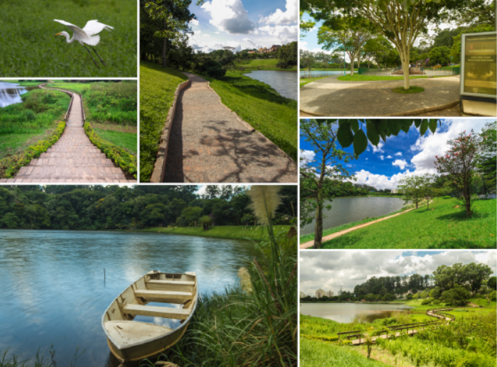
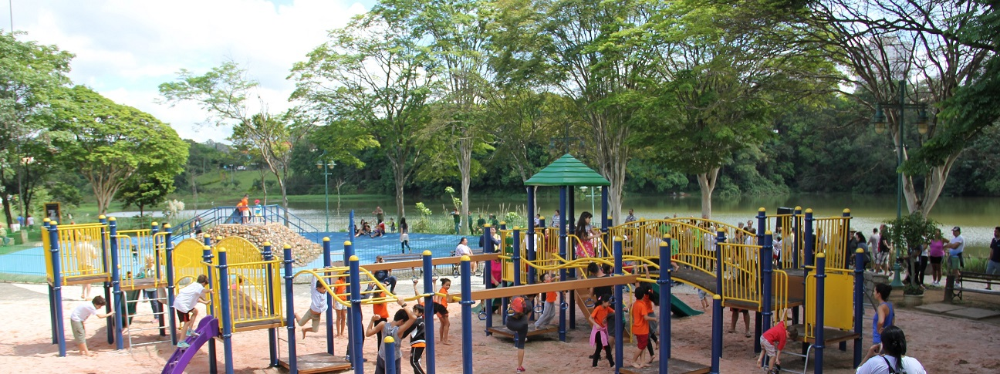
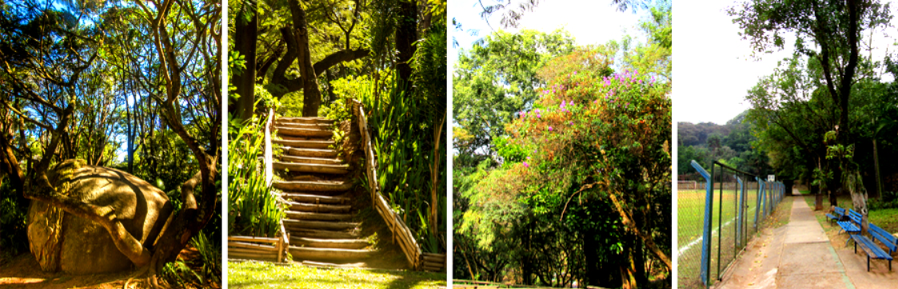
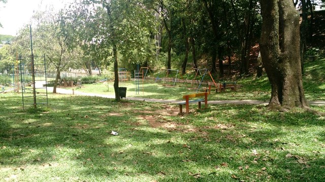

O parque Cidade de Toronto é uma das maiores fontes de turismo da região, existe desde 1992, possui vegetações da Mata Atlântica e é um ótimo lugar para passeios com a família e brinquedos para as crianças. No lago, é possível alimentar os peixes e apreciar os pássaros da região, se conectando com a natureza. No parque há também uma quadra. A infraestrutura do Parque Cidade de Toronto tem churrasqueira, bicicletário, sanitários, bebedouros, quiosques, palco, aparelhos de ginástica, pista de cooper, paraciclo, playground, recentemente reformado, quadras poliesportivas, espelho d´água, nascente e passeios sobre o lago e a várzea por trapiches.
Não há lanchonetes no local, mas há ambulantes próximos da entrada do parque, pelo menos nos finais de semanas.
Todos que visitam o parque ficam satisfeitos, é um ótimo lugar para passeios com a família aos finais de semana e espairecer com a linda vista durante a semana.
Não é necessário pagar ingresso, a entrada é gratuita.
Bom divertimento!


O parque é resultado do programa de intercâmbio profissional criado em 1987 pelas prefeituras de São Paulo e de Toronto, no Canadá, coordenado pela Secretaria de Planejamento (SEMPLA). A área escolhida para sua implantação está próxima da Rodovia dos Bandeirantes, atendendo vários bairros da região de Pirituba. Trata-se de um remanescente do loteamento “City América”, rico em brejos e com um lago.
Parque São Domingos

O parque possui pista de caminhada, bicicletário, quadra de campo, quadra poliesportiva, sanitários, playgrounds, lago e churrasqueiras.

Para conhecer um pouco mais sobre o parque, veja o vídeo abaixo feito por uma de nossas moradoras: